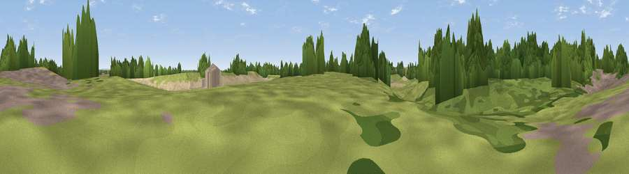

Viewpoint near Scopwick
#45493 in England · top 94% of its area beats it · near ScopwickWhere it is
The exact computed spot (TF 05175 58650). Click the marker for map links.
The view, rendered

A 360° render of this exact spot computed from the terrain model, tree cover and land cover — summer colours, afternoon light, calibrated against photographs of famous viewpoints. Real trees, hedges and buildings will differ in detail.
The panorama
Grey silhouette: terrain skyline in each direction (720 bearings, Earth curvature and refraction included). Dashed green: skyline with trees (+15 m) and buildings (+8 m) as obstacles. Blue strip: how far the ground is visible on each bearing.
Where the view opens
Wedge length = distance to the farthest visible ground on that bearing (vegetation-aware). Rings at 10, 25 and 50 km.
What fills the view
73% cropland · 16% grassland · 10% woodland
Angular shares of the visible panorama (visual magnitude), not map area. Landscape diversity 0.34 (0–1 Shannon).
Key numbers
More beautiful places nearby
The staircase of upgrades: each row has a higher view potential than everything closer. Driving times are estimates from straight-line distance, calibrated against real road routing — check an actual route before setting out.
| Place | Direction | Drive | Score |
|---|---|---|---|
| Marshall Hill | SE · 3 km | ~8 min | 17.1 |
| The Mount | S · 5 km | ~11 min | 17.4 |
| Viewpoint near Nocton | NNE · 6 km | ~13 min | 20.4 |
| Viewpoint near Wellingore | WSW · 7 km | ~14 min | 36.5 |
| Viewpoint near Wellingore | WSW · 7 km | ~15 min | 52.5 |
| Viewpoint near Lincoln | NNW · 15 km | ~28 min | 54.0 |
| Viewpoint near Burton-by-Lincoln | NNW · 19 km | ~33 min | 54.9 |
| Viewpoint near Great Gonerby | SW · 24 km | ~40 min | 62.0 |
53.11467, -0.43009 · source: osm peak · position refined by local search. Computed location — check access rights before visiting.